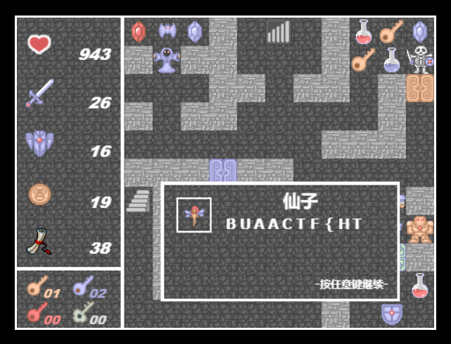

BUAACTF 2023 Writeup
嗯，分专题地一个个搞总感觉太专业了，我一个业余选手还是按时间顺序以写游记的心态来写吧（
简况
- 总排名 2/45
- 赛道排名 1/22
- 得分 6931
- 攻克数量 26/41
- 一血 *5，二血 *3，三血 *4
分方向
- Misc 4/8，二血 *1，三血 *1
- Crypto 8/8，一血 *3，二血 *1，三血 *2
- Pwn 2/7，三血 *1
- Web 4/9，一血 *1
- Reverse 8/9，一血 *1，二血 *1
玩得很开心，熬得很伤身（
Day 1
冲冲冲！刚上来第一天劲头十足，把各种工具链又熟悉了回来（指翻出了两年没用过的 IDA 和 pwnlib（x
本来以为打个几个小时就没输出了该走人了，更何况是大四老狗，还得写毕设 = =
没想到上手之后越来越觉得有意思，直接一周都搭进去了（
[Crypto] Hidden
一血！上来先看看能不能抢抢一血，这下看到你了，直接开搞！
首先观察加密算法。
给了一个参数 ，一个大素数。
算法对输入比特串 随机生成 组 ，计算 ，最后输出这 组 作为密文。
保证 。
怎么办！想想我会的，高斯消元！但是只能做 ！寄！
乘积能不能消元？消消看！从二元开始：
试着把 消掉！
em，好像消掉了一项！但是并没有什么用！哪怕我能枚举整个串中 的个数（这里的 ），要代回的话，我还需要知道 是多少，不然没法把 变成 和上面相消。总之仔细想一想发现顺着这个思路下去，我要解 需要先知道 （因为我知道后缀和之后直接差分本来就能得到 ），直接寄！
怎么办！上床摆会烂想一会！
有什么东西是乘了相当于加的！离散对数！不对，素数太大了怎么求离散对数啊，求出来了还不一定模 可逆呢。
突然 Goldwasser–Micali 密码体制蹦进了脑袋，二次剩余性好像正好是乘了相当于模 2 加的（其实就是离散对数的最末位），而且题目按 bit 构造方程也很让人容易往这联想。直接开搞！
只要把所有系数都换成它们的二次剩余性就行了，二次剩余相当于 0，二次非剩余相当于 1，那么整个方程一下子就变成了异或方程组的样子，仍然直接高斯消元即可。
写出解题脚本：
1 | |
直接得到 flag：
[Misc] 签到
一眼是个 github.io 静态网站，利用 github 的搜索功能直接出了：https://github.com/or4ngeSec/or4ngesec.github.io/search?q=BUAACTF
[Reverse] Snake
肯定是不会去真的玩 80 分的啦，直接拖进 IDA 里找到位置改成 01h，直接两分通关（

[Crypto] Math
三血！这个 RSA 题要解三个小问，嗯我还知道有一个夜中飞鸟坠于三段。
第一小问给了 ，还给了一个 ，且保证 。
这不直接 ，直接有 了。
第二小问给了 ，还给了一个 。
这 一眼是给你构 的，直接凑一个 就出了，因为这说明 ，直接用 解密即可。
第三小问给了 ，还给了一个 。
很容易发现 和 ，中国剩余定理一下直接就有 ，直接解出 之后就很显然了。
[Web] mota
随便翻翻发现它的存档都是直接存 Local Storage 里的，这不直接改数据（
但是它的 flag 还是分三段给的，太难截了（

[Reverse] Minesweep
直接动态调试一下拿到系数矩阵，之后直接脚本枚举判断每一位即可。
1 | |
[Reverse] oneQuiz’s revenge
直接拖进模拟器玩了玩，发现是一个走迷宫的小 app，直接用 IDE 自带的反汇编器就弄出迷宫数据了，手玩即可得到 flag。

[Reverse] obfu
直接瞪眼简化，最后简化出一个差不多长这样的东西：
1 | |
直接倒着异或回去输出即可。
[Crypto] Block Cipher
直接一个异或的 CBC 式的分组密码，给了 iv 和 key，倒着异或回去即可。其实给出开头是 BUAACTF{ 的话也不用给 iv 了（
1 | |

[Pwn] NLP
加减乘除倒是很小儿科，后面上来直接信息提取给我整蒙了，稍微冷静思考下，我决定：正则！
1 | |
[Reverse] Guessss
一血！
猜错扣 5 分，一共 200 分可扣，猜对了能赢回来。
逆向一下发现用了 rand，直接搜索 glibc rand predict，得到 https://www.mathstat.dal.ca/~selinger/random/。
直接按照线性关系预测即可。
1 | |
[Web] easy-ssti
一血！
根据 hint 可以确定引擎类型，直接查找文档学习一下它的语法，发现它有一个 __tera_context 变量，直接把它和明显不能合并的玩意合并，找到变量名。接下来获取变量内容后如法炮制即可得到 flag。
[Misc] zhuzhu
三血！
发现图片是 AES 加密的，而且只给了 key 没给 iv。不过不要紧，随便找个 PNG 头异或一下就能知道 iv 的值了（
拿到图片，发现并没有什么用。
用 opencv2 加载一下，发现 flag 信息直接存里面了，没清除，直接导出。
1 | |

Day 2
这天做了好久 pirate，但是总之 SIGSEGV，搞不明白为啥，最后仔细调了调才发现，直接跳到返回函数入口位置，它不平栈啊！= =
试了半天 Factor，捯饬了巨久工具链，主要这些陈年好软件（gmp-ecm / msieve）一个比一个难编译（恼
想利用下 GPU 的算例，结果 GPU 版本编译起来都废了巨大功夫，跑起来更是错误百出
拿这玩意跑 ECM 跑得巨慢，因为它同时发送 1728 条曲线用 CUDA 算，单个 CUDA 小块处理非常慢，燃了半天才弄完 stage1，stage2 又只能在 CPU 上嗯跑，它的暂存机制简直就是答辩，很难 stage2 多线程验证。
总之自闭了一整天。
Day 3
终于 de 出 pirate 了，堂堂复活！
[Pwn] pirate
三血！
博弈部分非常老生常谈，随便搜搜就有结论。简单逆向下找到后门函数位置，构造 payload 输出即可。
1 | |
嗯，为什么卡了一整天没过呢，因为没发现直接跳过去不平栈（太菜了 = =

[Crypto] Factor
一血！
续 Day 2 的折磨经历。开屏发现要求分解一个 155bit * 172bit * 172bit 的大合数。
简单查阅资料知道目前有两类算法，一类运行时间与最小因子相关，另一类只与数字本身大小相关，渐进上界略好一点。
结合题目描述很容易选择 ECM + SIQS/NFS 的方案。
较小的那个因子最后选择用 yafu 直接暴出，从 03:48 开跑跑到 07:31 爆出，实际共运行 3h 43min。

yafu 调 NFS 还有很严重的问题，它会在 linear algebra 这一步 hang 死，还不如直接我来调，反正也只剩最后两个要拆了。
最后那个 172*172 的选择用 msieve 拆，从 17:51 开跑跑到 19:46 爆出，实际共运行 1h 55min。
拆出来之后就很显然了：
1 | |
[Crypto] KeyExchange
三血！
用 和 联立很容易得到 和 。
乍一看很难弄，连跑都跑不动，但是好就好在他用的是 LCG。
一开始你是 ，既然 ，用数学归纳法、等比数列求和不难推出：
接下来直接在 和 之间转换即可，要得到 我们可以直接将 与 相乘再转换回去。
1 | |
[Misc] zhuzhu’s revenge
和原题大同小异，无非就是 SVD 确实要用上了。
1 | |
[Crypto] backpack
二血！
这个题后半部分一眼背包密码，而且他都把密钥给你了，直接解密即可。
1 | |
后面这部分需要搞解他的初始参数来预测他每一步异或的东西。我们知道头是 flag{，直接利用这个把界倒推回去即可，可以直接得到准确的初始参数。
1 | |

Day 4
这时候 crypto 差一道 ak，躺床上想了半天 ASR，怎么别人都会我不会，太麻了 = =
[Crypto] ASR
这个题前面蠢了，一直卡着，那个 都写出来了， 也写出来了就是没想到这能直接分解 ，太蠢了（x
第一段常规 RSA，直接解。
第二段 太小了，信安数基已经做过了，直接解。
第三段就是最开始说的那样，弄出这个之后直接加一之后和 求 gcd 就行。
第四段 很小，直接分解完暴力枚举即可。
1 | |
[Reverse] rtREV
二血！
这个题真的调吐血了，一晚上都在调这个题 = =
首先它是直接拖进 qemu 跑的，符号表给你全扬了，你是一点也找不着
第一步反编译已经很折磨人了，它不是 ELF，直接是 binary，因为要用 qemu 直接跑
得先转成 ELF，重命名一下 .data 段使得 objdump 能识别上：
1 | |
符号表全没了基本上没法看，最后我直接去 github 把源码下下来重新编译了一遍，再 readelf 出来，直接暴力匹配指令序列 match 各个函数，最终定位 get_flag 入口，定位完了再开 gdb 去设个断点验证一下
搞清楚入口之后直接拿进 IDA 里瞪眼即可，最后因为没学过密码学不认识 AES 实现浪费了 2 小时（恼
拿到数据搞清算法后直接写出解密脚本：
1 | |
Day 5
实在不会做 rev，来试试学点 web
[Web] easy-unserialize
网上一搜发现是原题，直接学习一手。
发现并不用控制 true/false 之类的，直接让 Moon 调用的是另一个 KeyPort 的 check，执行的却是这一个 KeyPort 的 call 就行了。
1 | |
弄出来之后拿 requests 发送：
1 | |
[Misc] crazymaze
二血！
这个题如果他的 target 是随便设的是很难做的，至少在这个时限内我并不会做 = =
所以考虑他是某种特定形式的最优解。最后随便写了个中间某一步非最优，直接对了。
最头疼的是交互效率问题。一开始拿 python 写了一版巨慢，拿 golang 写还是巨慢，最后 C 才过的。
1 | |

Day 6
最后一晚！冲冲冲！感觉好几个小朋友都通宵了，太肝了（
[Web] 问卷调查
填问卷拿 flag 没啥好说的 = =
[Crypto] Can_Your_Noggin_Survive
一血！（实际上没几个人在做这个题吧喂，而且这个题交互问题持续太久了）
未知二元布尔运算，一眼非常地 boolean circuit。
首先 naive 地顺序询问两轮，发现误码率并不高。再随机相信他作答，随了一个正确的用来推 love 的作用，发现是 NOR 门。
众所周知 NOR 门能构造所有 boolean circuit，所以所有纠错码基本上都是可以考虑的。
简单搜索可以直接得到现成的线性码矩阵：[31, 16, 8]2
直接写出解题脚本：
1 | |
[Reverse] ezvm
首先把跳到中间的那条指令的前半部分改成 nop，然后就可以正常静态分析了。
IDA 没法自动分析 switch，我们手动创建一个 switch 就可以愉快瞪眼了。
发现其实就是一个 xor 输出。
[Reverse] magic-cube
和 upx.exe 本身对比发现这玩意把开头的 UPX0 改成 .bss 了导致 upx.exe 没法识别它，我们直接给它改回来即可。用 upx.exe 脱壳之后即可直接拖进 IDA 瞪眼。
发现就是走迷宫。
1 | |
手玩发现末尾有个 [，感觉有点怪，正好平台炸了没事干，写了个 DFS 跑跑。
1 | |
不跑倒好，这一跑跑出 80 个解来，拖进下发的 exe 里一验证，嘿，还都是正解。
挨个尝试直到第 61 个才猜对，发现就是最开始手玩的那个，只能说很难绷得住。
1 | |
Day 7
小三月，嘿嘿嘿，小三月，真可爱啊！终于等到和三月七见面的这一天咯！